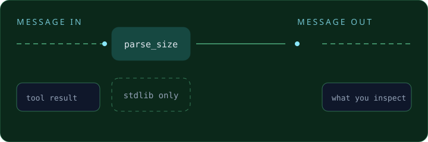

Install
consolepip install parse-size
Use
pythonfrom parse_size import SizeParseError, format_size, parse_size
parse_size("10 MB") # 10_000_000
parse_size("10MiB") # 10_485_760
parse_size("2 gigabytes") # 2_000_000_000
parse_size("5", default_unit="MiB") # 5_242_880
parse_size("-1 MB", allow_negative=True)
format_size(1_500_000) # '1.5 MB'
format_size(1_234_567, precision=0) # '1 MB' (rounded, not truncated)
format_size(1_500_000, space=False) # '1.5MB'
format_size(1_234_567, precision=None) # '1.234567 MB' (exact)
format_size(3 * 1024**3, binary=True) # '3 GiB'
A common argparse pair:
pythonparser.add_argument("--max-size", type=parse_size, default="10 MB")
parser.add_argument("--pretty", action="store_true")
# --max-size 1.5GiB → 1610612736
Rules
| suffix | factor | suffix | factor | |
|---|---|---|---|---|
| ------ | ------ | - | ------ | ------ |
B | 1 | KiB | 1024 | |
KB | 1000 | MiB | 1024² | |
MB | 1000² | GiB | 1024³ | |
GB | 1000³ | TiB | 1024⁴ | |
TB | 1000⁴ | PiB | 1024⁵ | |
PB | 1000⁵ |
- single-letter aliases (
K,M,G,T,P) are decimal, as inddandls -h - long names work in singular or plural (
megabyte,megabytes,mebibytes) - case does not matter, whitespace and underscores inside the value do not matter
- fractions round half up to whole bytes, so
0.0005 kBis 1 byte - a bare number is read in
default_unit(Bunless you say otherwise) - negative values raise unless
allow_negative=True
Limits
- No
%of a total, no ranges and no "as much as fits" — just one value. format_sizetops out at petabytes; larger values keep growing inPB.- Human-readable output follows IEC suffixes only, never
K/Mshorthand.
Development
consolepython -m venv .venv
.venv/bin/pip install -e ".[test]"
.venv/bin/pytest
The suite covers every line of the package (pytest --cov --cov-branch), and the examples in the docstrings run as tests through --doctest-modules.
License
MIT.
Other libraries here
One problem each, standard library only, no runtime dependencies.
- argrepair — turn a bad tool call into a message the model can act on
- backoff-headers — turn a rate-limit header into the exact time to wait
- columncheck — find the CSV defect before the pipeline does
- dir-digest — one hash for a directory tree, identical on every OS
- docanchor — catch every broken heading anchor in your docs
- envfile-diff — diff two .env files without printing the secrets
- fsync-replace — replace a file so a crash cannot leave it half-written
- header-date — HTTP dates parsed strictly, formatted correctly
- junit-merge — merge JUnit XML from every job into one honest report
- npm-semver — npm semver ranges, parsed the way npm parses them
- outputcap — keep a huge tool result out of the context window
- path-containment — keep untrusted paths inside their directory
- redactscope — stop secrets in tool results before they reach the model
- runbudget — a per-run cost cap that warns before it stops
- testflakes — rank your flaky tests from the history you already have
- tool-loop-guard — catch an agent repeating itself while it is still cheap
- toolcall-ledger — a hash-chained record of every tool call
- toolcircuit — stop retrying a tool that is down
- toolquota — client-side rate limits your agent loop can wait on
- wheeldeps — read a wheel's dependencies offline, markers included
- zip-deterministic — byte-identical archives, build after build